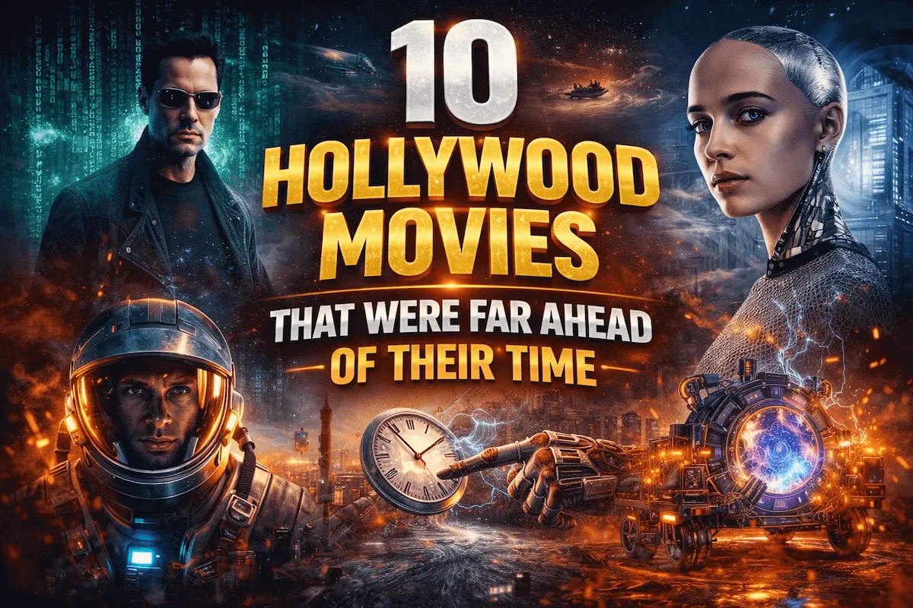

What Makes a Movie a Cult Classic?
Understanding the Phenomenon That Transcends Box Office Numbers
Some films don’t just entertain, they follow you home, live in your head, and grow older with you. Cinema is not merely about opening-weekend numbers, critical ratings, or award recognition. Some films carve out a life of their own long after their theatrical run ends. They are discussed passionately, quoted endlessly, and revisited across generations. These films are known as cult classics—a term that signifies emotional loyalty rather than commercial success.
A cult classic film may begin its journey as a box-office failure, an overlooked experiment, or a misunderstood work of art. Over time, however, it gathers a dedicated and vocal audience that elevates it to legendary status. This blog explores what defines a cult classic, why such films resonate so deeply, and how both Hollywood and Indian cinema have contributed iconic entries to cult film culture.
What Does “Cult Classic” Really Mean
A cult classic is a film that enjoys a passionate, devoted fan base despite limited mainstream appeal during its initial release. Unlike blockbuster hits, cult films grow organically—through word of mouth, repeat viewings, midnight screenings, fan discussions, and internet communities.
What distinguishes a cult classic is not universal popularity, but intensity of appreciation. Fans don’t just like these films; they identify with them. The characters, themes, and dialogues often feel personal, rebellious, or ahead of their time.
Cult classics often:
- Challenge traditional storytelling norms
- Explore unconventional themes
- Defy genre expectations
- Speak directly to niche audiences rather than the masses
If you want to explore colour psychology deeper, this best selling book
on colour theory by Josef Albers
is a great resource for filmmakers and designers.
Why Cult Classics Matter in Cinema
Cult classics hold a unique place in film history because they expand the boundaries of mainstream cinema. These films often influence future filmmakers, inspire pop culture references, and redefine genres long after their release.
They matter because:
- They preserve artistic risk-taking
- They give voice to subcultures and alternative perspectives
- They age better than many commercial films
- They build emotional legacies instead of financial ones
In many cases, cult classics gain recognition precisely because they were misunderstood when released.
Core Characteristics of a Cult Classic
🔹 A Strong, Loyal Fanbase
Cult films thrive on dedicated audiences who actively promote, defend, and repeatedly revisit the film over the years. These fans often form emotional connections with the characters and themes, engaging in discussions, cosplay, fan art, online theories, and repeat screenings that keep the film alive long after its initial release.
🔹 Quotable Dialogues & Iconic Scenes
Many cult classics are remembered for their sharp dialogues, unforgettable scenes, or distinctive character quirks that embed themselves into popular culture. These moments are endlessly quoted, referenced, and reinterpreted, allowing the film to live on beyond the screen through shared cultural memory.
🔹 Initial Commercial or Critical Failure
A significant number of cult classics failed at the box office or received mixed to negative reviews upon release. Free from the pressure of mainstream expectations, these films were later rediscovered by audiences who recognized their originality, depth, and artistic value with time.
🔹 Unique Vision & Experimental Storytelling
Cult films often break traditional cinematic rules by embracing nonlinear narratives, ambiguous endings, dark humor, or bold genre-blending. This willingness to experiment sets them apart from formula-driven cinema and attracts viewers seeking unconventional storytelling experiences.
🔹 Timeless or Ahead-of-Time Themes
These films continue to resonate across generations because they explore universal human emotions such as identity, rebellion, loneliness, freedom, and existential curiosity. Their themes often feel ahead of their time, gaining relevance as social perspectives and cultural contexts evolve.
To enjoy films with true cinematic colour at home, try this,
affordable projector
Hollywood Cult Classics That Defined the Term
Fight Club (1999)
Click to watch the official trailer on YouTube
Initially divisive and controversial, Fight Club evolved into one of the most discussed films of modern cinema. Its critique of consumerism, masculinity, and identity resonated deeply with younger audiences. Over time, its philosophical undertones and shocking narrative structure turned it into a cultural phenomenon.
Blade Runner (1982)
Click to watch the official trailer on YouTube
A box-office disappointment upon its initial release, Blade Runner slowly transformed into one of the most influential science-fiction films ever made. Over the years, its moody visual design, philosophical storytelling, and groundbreaking world-building came to define the cyberpunk genre itself. The film’s exploration of artificial intelligence, memory, identity, and what it truly means to be human continues to spark debate among viewers and scholars alike. Its dystopian vision of the future—filled with corporate dominance, environmental decay, and emotional isolation—feels uncannily relevant in today’s technology-driven world, proving how far ahead of its time the film truly was.
Donnie Darko (2001)
Click to watch the official trailer on YouTube
With its cryptic narrative, philosophical questions, and haunting atmosphere, Donnie Darko slowly found its audience through home video releases and late-night television screenings. What initially puzzled mainstream viewers became a source of deep fascination for those drawn to introspective and unconventional storytelling. The film’s exploration of time loops, mental health, fate, and existential anxiety encouraged repeated viewings and endless interpretation, allowing it to grow into a cult staple among curious, thoughtful audiences who found personal meaning within its eerie ambiguity.
Looking to create a cinematic vibe at home? Try this,
ambient study lamp
that lets you switch between warm, cool, and colourful lighting moods.
️ Indian Cinema and the Rise of Cult Classics
Swades (2004)
Click to watch the official trailer on YouTube
A film that failed to impress commercially upon its release but aged with remarkable grace over time, Swades gradually earned its place as a modern cult classic. Its quiet emotional depth, grounded realism, and nuanced storytelling resonated deeply with audiences who discovered it later. Rather than relying on grand spectacle or exaggerated nationalism, the film offered a sincere portrayal of patriotism rooted in responsibility, self-reflection, and meaningful action—qualities that continue to make it relevant and emotionally powerful years after its release.
Gangs of Wasseypur (2012)
Click to watch the official trailer on YouTube
Initially polarizing due to its raw violence, sprawling narrative, and unusually long runtime, this two-part epic divided audiences at the time of its release. However, with repeated viewings and growing appreciation, it gradually achieved legendary status. Its razor-sharp dialogues, deeply etched characters, and unapologetic realism captured the chaos and brutality of its world with rare authenticity. Over time, the film’s influence on popular culture, internet discourse, and contemporary storytelling firmly cemented its place as a modern Indian cult classic.
Ugramm (2014)
Click to watch the official trailer on YouTube
This Kannada film gradually developed cult appeal through its gritty narrative, stylized violence, and tightly written character arcs that felt both raw and uncompromising. Its intense atmosphere and grounded portrayal of crime stood apart from conventional commercial cinema, resonating strongly with audiences seeking darker, more realistic storytelling. Over time, the film’s impact became evident as it inspired a new wave of bold, grounded narratives in regional cinema, influencing filmmakers to embrace realism, moral ambiguity, and restrained yet powerful storytelling.
KGF: Chapter 1 (2018)
Click to watch the official trailer on YouTube
Though successful commercially upon its release, KGF: Chapter 1 went on to achieve cult status through its striking visual identity, thunderous background score, and unapologetically larger-than-life heroism. The film’s stylized storytelling, slow-burn buildup, and mythic portrayal of its protagonist created an immersive cinematic experience that resonated deeply with audiences. More than just a box-office hit, KGF inspired intense fan loyalty, repeat viewings, and widespread cultural impact, allowing it to transcend regional and language barriers to become a modern pan-Indian cult phenomenon.
How Time Turns Films into Cult Classics
Cult status is rarely immediate. Films often gain recognition through:
- Television reruns
- DVD and streaming platforms
- Social media discussions
- Memes and pop-culture references
With time, audiences revisit films without the pressure of expectations, allowing hidden layers and artistic risks to shine.
Cult Classics vs Blockbusters
| Aspect |
Cult Classic |
Blockbuster |
| Audience |
Niche but deeply loyal |
Mass appeal |
| Success Timeline |
Grows slowly over years |
Immediate box-office impact |
| Storytelling Style |
Experimental, unconventional |
Formula-driven |
| Box Office |
Often underperforms initially |
Designed for high earnings |
| Legacy |
Emotional and cultural |
Commercial and moment-driven |
While blockbusters dominate the present, cult classics quietly endure the future.
The Role of the Internet & Streaming Platforms
Modern cult films benefit from:
- Online fandoms
- Reddit theories
- YouTube essays
- Streaming rediscovery
Platforms like Netflix and Amazon Prime allow films to reach audiences they never had during theatrical release.
Can New Films Become Cult Classics?
Yes—but cult status cannot be manufactured. Marketing cannot create cult love; audiences must discover it organically. Films that take risks, challenge norms, and speak honestly have the highest chance of achieving cult legacy.
The Power of Repeat Viewing and Reinterpretation
One of the most defining traits of a cult classic is its ability to evolve with repeated viewings. Unlike conventional commercial films that reveal their entire emotional and narrative impact in a single watch, cult films often unfold gradually. Each revisit allows the audience to notice subtle visual cues, layered performances, symbolic imagery, and deeper thematic meanings that may not have been apparent initially. This process of rediscovery creates a lasting bond between the viewer and the film, transforming it from passive entertainment into an ongoing experience. Over time, repeat viewing turns curiosity into obsession and appreciation into loyalty—key ingredients in cult film culture.
Cult Classics as Expressions of Rebellion and Counterculture
Cult films often emerge as reflections of rebellion—against social norms, cinematic conventions, or ideological systems. These films resonate deeply with audiences who feel disconnected from mainstream narratives or dominant cultural values. Whether challenging capitalism, authority, gender roles, morality, or identity, cult classics frequently position themselves outside societal comfort zones. Their refusal to conform makes them controversial at first, but that same defiance allows them to age powerfully. As societies evolve, these films gain new relevance, allowing each generation to reinterpret them through its own cultural lens.
Final Thoughts: Why Cult Classics Never Die
Cult classics serve as powerful reminders that cinema is not defined by opening-weekend numbers or commercial success, but by emotional connection and lasting impact. These films often take time to find their audience, growing quietly through word of mouth, rediscovery, and personal attachment. They endure because they speak truthfully, boldly, and without compromise, offering stories that resonate long after trends fade and box-office records are forgotten.
A cult classic is not just a film—it is an experience, a belief, and often a mirror reflecting our own identities, emotions, and evolving perspectives. As long as audiences continue to seek meaning beyond spectacle, cult classics will never truly fade away.
More from CineNostalgia
